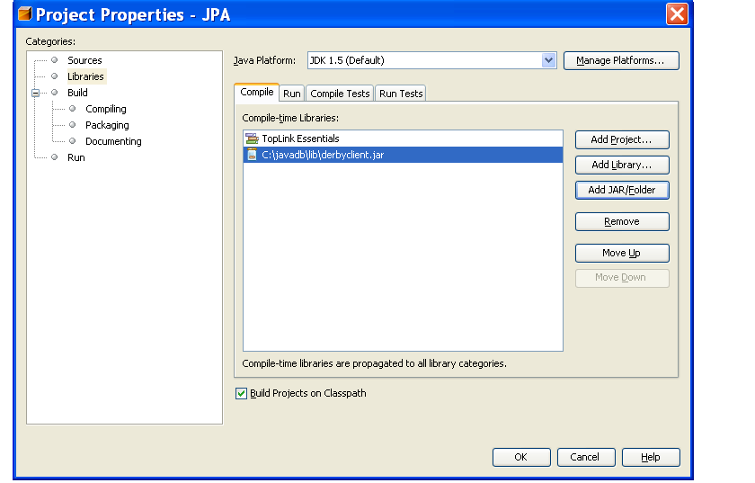
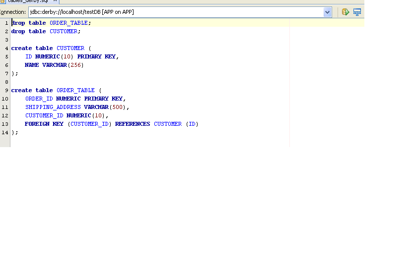
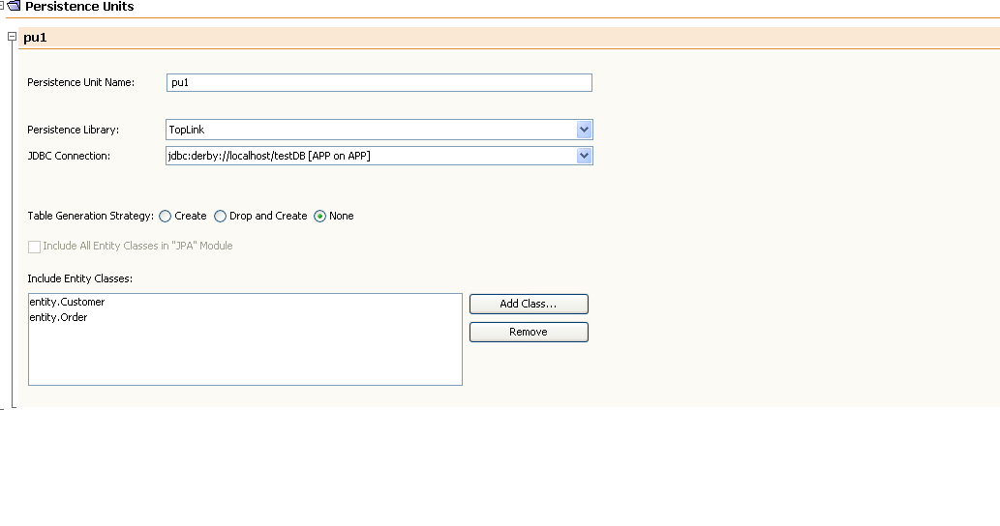

New
to GlassFish | Community
Guidelines | Downloads
| FAQ
| How-Tos
This is a very simple example that uses only 2 entities - a Customer
and an Order, with OneToMany relationships between them. The Customer
and the Order classes are Plain Old Java Classes (POJOs). These
classes, as well as the code that manipulates POJO instances, can be
used without any changes in Java SE or Java EE environment.
Accessing
an EntityManagerFactory and an EntityManager depends on the environment
and is described in more details below.
We will create
a customer and two related orders, find the customer, and navigate from
the customer to its orders, and then merge and remove all the objects.
All these
operation will be performed using Java Persistence API and require JDK 5.0.
Click here to get
the ZIP file with the complete Java SE example as a netbeans project. This example works with Java DB or with Oracle.
Click here to get the ZIP file with the complete Java SE example. This example works with Oracle.
Click here to get
the ZIP file with the complete Java EE example.
Refer to Java
Persistence API document of JSR-220:
Enterprise
JavaBeansTM
3.0 Specification for further details on annotations and APIs.
Check example sources for the
necessary import statements.
| CUSTOMER |
| ID |
| NAME |
| ORDER_TABLE |
| ORDER_ID |
| SHIPPING_ADDRESS |
| CUSTOMER_ID |
@Entity
public class Customer {
private int id;
private String name;
private Collection<Order>
orders;
@Id
public int getId() {
return id;
}
public void setId(int id) {
this.id = id;
}
public String getName() {
return name;
}
public void setName(String name)
{
this.name
= name;
}
@OneToMany(cascade=ALL, mappedBy="customer")
public Collection<Order> getOrders() {
return orders;
}
public void setOrders(Collection<Order>
newValue) {
this.orders = newValue;
}
}
@Entity
@Table(name="ORDER_TABLE")public class Order {
private int id;
private String address;
private Customer customer;
@Id
@Column(name="ORDER_ID") public int getId() {
return id;
}
public void setId(int id) {
this.id = id;
}
@Column(name="SHIPPING_ADDRESS") public String getAddress()
{
return address;
}
public void setAddress(String
address) {
this.address
= address;
}
@ManyToOne()
@JoinColumn(name="CUSTOMER_ID")
public Customer getCustomer() {
return customer;
}
public void setCustomer(Customer
customer) {
this.customer
= customer;
}
}
// Create new customer
Customer customer0 = new Customer();
customer0.setId(1);
customer0.setName("Joe Smith");
// Persist the customer
em.persist(customer0);
// Create 2 orders
Order order1 = new Order();
order1.setId(100);
order1.setAddress("123 Main St. Anytown, USA");
Order order2 = new Order();
order2.setId(200);
order2.setAddress("567 1st St. Random City, USA");
// Associate orders with the customer.
customer0.getOrders().add(order1);
order1.setCustomer(customer0);
customer0.getOrders().add(order2);
order2.setCustomer(customer0);
When this transaction commits, all three entities will be
persisted in the database.// Create new EntityManager
em = emf.createEntityManager();
Query q = em.createQuery("select c from Customer c
where c.name = :name");
q.setParameter("name", "Joe Smith");
Our query is supposed to return a single customer, so we will
use the Query method getSingleResult()
to execute the query. This method would throw an exception if there is
no or more than one matching customers.
Customer c = (Customer)q.getSingleResult();Collection<Order> orders =
c.getOrders();
if (orders == null || orders.size() != 2) {
throw new
RuntimeException("Unexpected number of orders: "
+ ((orders == null)? "null" : "" + orders.size()));
} // Merge the customer to the new persistence
context
Customer c0 = em.merge(c);
// Delete all records
em.remove(c0);
// Create EntityManagerFactory for persistent unit
named "pu1"
// to be used in this
test
emf = Persistence.createEntityManagerFactory("pu1"); // Create new EntityManager
em = emf.createEntityManager();
If a transaction required, it is started: // Begin transaction
em.getTransaction().begin();
And then the business logic is executed in a separate business
method:// Business logicmybusinessmethod(...);
// Commit the transaction
em.getTransaction().commit();
And EntityManager should always be closed if it won't be used
again: // Close this EntityManager
em.close();
Java SE client code in this example
is located in the
class client.Client. java
-javaagent:${glassfish.home}/lib/toplink-essentials-agent.jar
client.Client
To configure the JDBC driver to be used when running the project, right-click on the project, select properties. Click on the libraries and then click on the 'Add JAR/Folder' button to add the jars for the JDBC driver being used. In the example below, the Java DB/Derby JDBC Client Driver is added.

Scripts are provided to create the tables needed for the example for either Java DB/Derby or Oracle.
Note:If you are using Oracle, go to the runtime tab, click databases and then right click drivers to add the Oracle driver so that it can be used with the SQL Editor.

To configure the persistence unit for the sample, click on source packages and then click on META-INF. Double click on persistence.xml. Your configuration should look like the following if you are using Java DB/Derby:

To run the the sample application. Right click on the project and select 'Run Project'.
@PersistenceContext(unitName="pu1")
private EntityManager em; // Persist all entities
System.out.println("Inserting Customer and Orders...
" + sb.testInsert());
// Test query and navigation
System.out.println("Verifying that all are
inserted... " + sb.verifyInsert());
// Get a detached instance
Customer c = sb.findCustomer("Joe Smith");
// Remove all entities
System.out.println("Removing all... " +
sb.testDelete(c));
// Query the results
System.out.println("Verifying that all are
removed... " + sb.verifyDelete());
${glassfish.home}/bin/asadmin deploy --retrieve .
ex1-ee.ear
${glassfish.home}/bin/appclient
-client ./ex1-eeClient.jar -mainclass client.AppClient
Inserting Customer and Orders... OK
Verifying that all are inserted... OK
Removing all... OK
Verifying that all are removed... OK